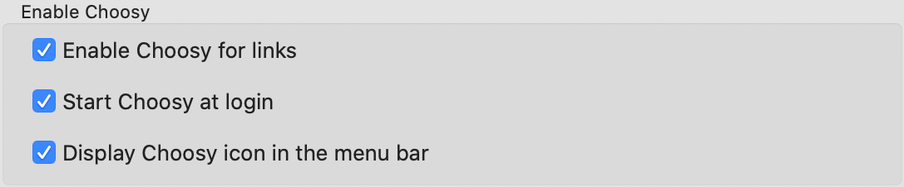
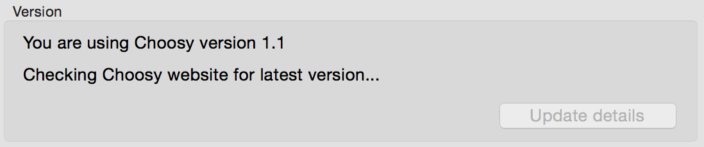
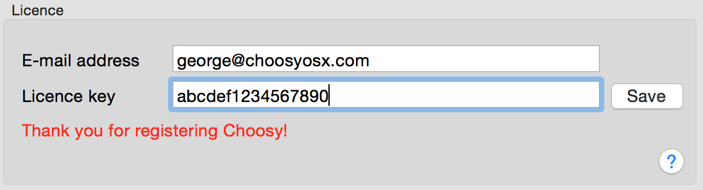

You are here:
Choosy help /
Settings /
Choosy Help: General settings
This page describes the settings on Choosy's “General” tab. To find these settings
launch the Choosy app (from Finder, Launchpad, etc.) and then click on the General tab.
The general settings are grouped into three sections:
- Enable Choosy
- Version
- Licence
Enable Choosy
This section contains settings that allow you to enable and disable various aspects of Choosy.

- Enable Choosy for links
-
This checkbox determines whether or not Choosy will be used when clicking on links to web sites.
If you disable this option whichever browser is at the top of your Choosy browsers list (see
browser settings) will be set as your default browser.
If you enable this option then Choosy will be used whenever the default browser would normally
be used.
- Start Choosy at login
-
Enable this option to have Choosy start whenever you login to your Mac.
If you disable this option, Choosy will start up the first time you
click on a link. This option is probably most useful when paired
with the Display Choosy icon in the menu bar option (see below).
- Display Choosy icon in the menu bar
-
Allows you to display a Choosy icon at the top right of your screen in the menu bar. This
gives you access to a menu which allows you to quickly
launch browsers and access Choosy's settings. Note that the menu bar icon will only be
displayed while Choosy is running, so you will probably want to use
this setting in conjunction with the start Choosy at login option.
Version
This section contains information about which version of Choosy you have installed and any updates
that are available.

If an update is available you can see full details of the new version and install it by clicking on
the Update details button.
Licence
This section allows contains information about licensing.

If Choosy is not registered the number of days remaining in the trial period will be displayed here.
If you decide to purchase a Choosy licence you enter your
licence information in the following fields:
- E-mail address
-
This must be the e-mail address that you provided when purchasing your licence from the Choosy
web site.
- Licence key
-
This key will be emailed to you when you purchase a licence.